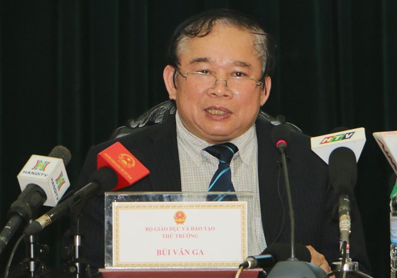
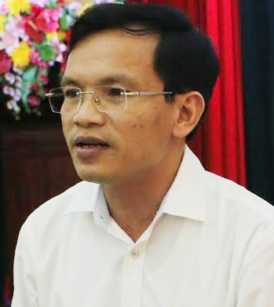

<section class="section-wrap" style="margin-top: 60px;">
	<div class="thongtin-wrap" style="position: relative;">
					<div class="quangcao" style="width: 275px; height: 800px; position: absolute; top: 20px; left: 0px;">
						
						
					</div>
	<div class="container infomation-content">
		<div class="infomation-content-us">
				<div class="the-article-body cms-body">
						<h1 class="the-article-title cms-title">Thi THPT quốc gia 2017: Công bố phương án chính thức</h1>
						<p class="the-article-summary cms-desc">
						Chiều 28/9, Bộ GD&amp;ĐT họp báo công bố phương án thi THPT quốc gia 2017. Theo đó, môn Ngữ văn thi tự luận, các môn còn lại theo hình thức trắc nghiệm.
						</p>
						<p>Lãnh đạo Bộ GD&amp;ĐT cho biết ngay trong hôm nay, Bộ này gửi công văn về phương án thi chính thức năm 2017 cho các trường trên toàn quốc để kịp thời chuẩn bị và hướng dẫn thí sinh.</p>
						<p>Về cơ bản, phương án thi THPT quốc gia 2017 giống dự thảo của Bộ GD&amp;ĐT đưa ra trước đó. Thí sinh sẽ thi&nbsp;4 bài trắc nghiệm gồm Toán, Ngoại ngữ, Khoa học tự nhiên (tổ hợp Vật lý, Hóa học, Sinh học) và Khoa học xã hội (tổ hợp Lịch sử, Địa lý, Giáo dục công dân) đối với thí sinh hệ giáo dục THPT.</p>
						<h4><strong>Vẫn thi trắc nghiệm môn Toán</strong></h4>
						<p>Theo Thứ trưởng GD&amp;ĐT Bùi Văn Ga, đây là lần đầu tiên tổ chức các bài thi tổ hợp Khoa học tự nhiên, Khoa học xã hội; sẽ có điểm thi từng phần và điểm của tổng bài thi tổ hợp. Các trường đại học, cao đẳng có thể lấy điểm thi từng phần để xét tuyển (ví dụ điểm Toán của bài thi riêng và điểm Lý, Hóa của bài thi tổ hợp).</p>
						<p>Bộ GD&amp;ĐT tăng thời lượng các môn thi, với tổ hợp Khoa học tự nhiên và Khoa học Xã hội, mỗi thành phần của bài thi là 50 phút (tổng cộng 150 phút). </p>
						<p>Kỳ thi THPT quốc gia 2017 sẽ được tổ chức trong 2 ngày của tháng 6. Ngày thứ nhất: Sáng thi Ngữ văn, chiều thi Toán. Ngày thứ hai: Sáng thi Khoa học tự nhiên, chiều Khoa học xã hội. </p>
						<p>Việc xét công nhận tốt nghiệp THPT sẽ kết hợp sử dụng kết quả 4 bài thi tốt nghiệp (với thí sinh giáo dục THPT) hoặc 3 bài thi tốt nghiệp (thí sinh giáo dục thường xuyên) và điểm trung bình cả năm lớp 12, cùng điểm ưu tiên, khuyến khích.</p>
						<p>Phương thức tính điểm các môn thi tốt nghiệp và điểm trung bình cả năm lớp 12 có tỷ lệ 50:50. Đặc biệt, Bộ GD&amp;ĐT thông tin chi tiết về điểm liệt của mỗi bài thi. Theo đó, điểm liệt của mỗi bài thi độc lập và thành phần của bài thi tổ hợp là 1 điểm.</p>
						<p>Ông Vũ Đình Chuẩn - Vụ trưởng Vụ giáo dục Trung học, Bộ GD&amp;ĐT - cho rằng không nên lo học sinh chỉ học trắc nghiệm mà bỏ qua tự luận, bởi đề thi sẽ phân hóa ở bốn mức độ: Nhận biết, thông hiểu, vận dụng và vận dụng cao. </p>
						<p>Bên cạnh đó, việc lo lắng nhiều lò luyện thi khi có các môn thi trắc nghiệm là thừa, bởi hiện tại các lò luyện vẫn tồn tại. Thậm chí, nội dung của thi trắc nghiệm bao quát giáo trình có thể hạn chế được luyện thi.</p>
						<table class="picture" align="center">
						<tbody>
						<tr>
						<td ></td>
						</tr>
						<tr>
						<td class="pCaption caption">Thứ trưởng GD&amp;ĐT Bùi Văn Ga tại buổi họp báo chiều 28/9. Ảnh: <em>Ngân Giang.</em></td>
						</tr>
						</tbody>
						</table>
						<h4><strong>Nhiều giáo viên giỏi xây dựng ngân hàng đề thi</strong> </h4>
						<p>Về việc xây dựng ngân hàng đề thi, Bộ GD&amp;ĐT cho biết đã tập hợp lực lượng giáo viên nhiều kinh nghiệm theo từng môn. Nhóm ra đề thi sẽ làm việc vào tháng 10 tới.&nbsp;Dự kiến đầu tháng 10, Bộ GD&amp;ĐT sẽ công bố đề thi minh họa.</p>
						<p>Theo ông Mai Văn Trinh - Cục trưởng Cục khảo thí và Kiểm định Chất lượng, Bộ GD&amp;ĐT - Bộ lựa chọn phương án thi trắc nghiệm phù hợp với số lượng thí sinh đông (khoảng một triệu người), để đánh giá chất lượng giáo dục phổ thông và căn cứ xét tuyển vào đại học. </p>
						<p>Với môn Toán, sách giáo khoa và bài tập ở trường phổ thông đã sử dụng trắc nghiệm. Lực lượng tham gia xây dựng câu hỏi là giáo viên dạy tại các trường, chuyên gia từ viện nghiên cứu, giảng viên đại học. </p>
						<p>Bộ GD&amp;ĐT kế thừa ngân hàng câu hỏi của ĐH Quốc gia Hà Nội và chuẩn bị từ nay đến tháng 5/2017 để xây dựng ngân hàng câu hỏi. Việc điều chỉnh số câu hỏi thi trong bài Ngoại ngữ và Toán đáp ứng được ma trận đề thi, dễ dàng hơn trong việc thiết kế đề thi.</p>
						<p>Ông Trinh cho biết sắp tới, Bộ GD&amp;ĐT sẽ tiến hành thi thử để tăng độ tin cậy cho đề thi.</p>
						<p>Trước băn khoăn về điểm liệt cho mỗi môn thi trong bài tổ hợp là 1 có phù hợp khi học sinh “đánh bừa” cũng có thể đạt 2,5 điểm, ông Trinh khẳng định mức điểm liệt như vậy là hợp lý. Trong lộ trình sắp tới, khi thay đổi sách giáo khoa mới, Bộ sẽ chuyển hóa từ tổ hợp thành tổng hợp và tích hợp.</p>
						<table class="picture" align="right">
						<tbody>
						<tr>
						<td ></td>
						</tr>
						<tr>
						<td class="pCaption caption" align="right">Ông Mai Văn Trinh phát biểu tại họp báo. Ảnh: <em>Ngân Giang.</em></td>
						</tr>
						</tbody>
						</table>
						<p>Cục trưởng Cục khảo thí và Kiểm định Chất lượng cũng khẳng định không thể có phương án thi trọn vẹn, mà chỉ có phương án hợp lý và dần hoàn chỉnh.</p>
						<p>Về băn khoăn của độ tin cậy khi giao kỳ thi cho các sở GD&amp;ĐT chủ trì, Thứ trưởng Bùi Văn Ga nói thêm Bộ GD&amp;ĐT sẽ điều động giảng viên từ các trường đại học, cộng thêm sự chuẩn bị kỹ về công nghệ kỹ thuật. </p>
						<p>Thứ trưởng Ga chia sẻ việc đổi mới công tác thi không thể thực hiện trong cùng một năm, vì có thể khiến thí sinh sốc. Do đó, Bộ GD&amp;ĐT đã đổi mới dần trong năm 2015, 2016 và tiếp tục thay đổi trong năm 2017. </p>
						<h4><span><strong>Sử dụng phần mềm tuyển sinh chống 'ảo'</strong></span></h4>
						<p>Về phương án xét tuyển đại học, cao đẳng, lãnh đạo Bộ GD&amp;ĐT khẳng định vẫn sử dụng phần mềm tuyển sinh như kỳ thi năm 2015-2016, có nhiều phân hệ, bao gồm đăng ký xét tuyển, lưu giữ thông tin của thí sinh... </p>
						<p>Ngoài ra, phần mềm còn có phân hệ đưa ra danh sách thí sinh trúng tuyển, chống thí sinh "ảo" (đã chạy thử nhiều năm) để các trường kiểm soát được thí sinh của trường mình.</p>

		</div>
	</div>
	</div>
</section>